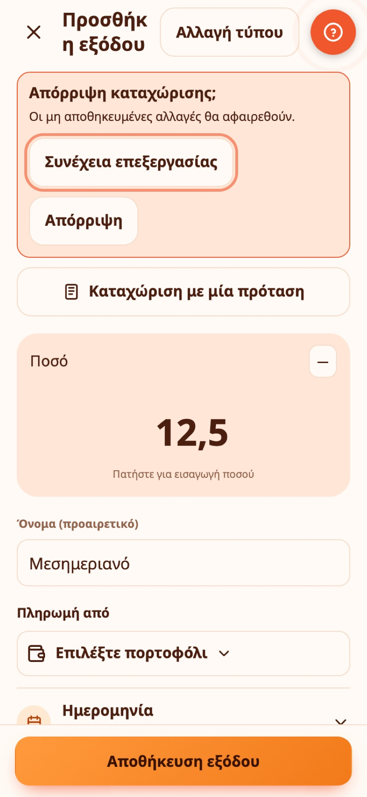
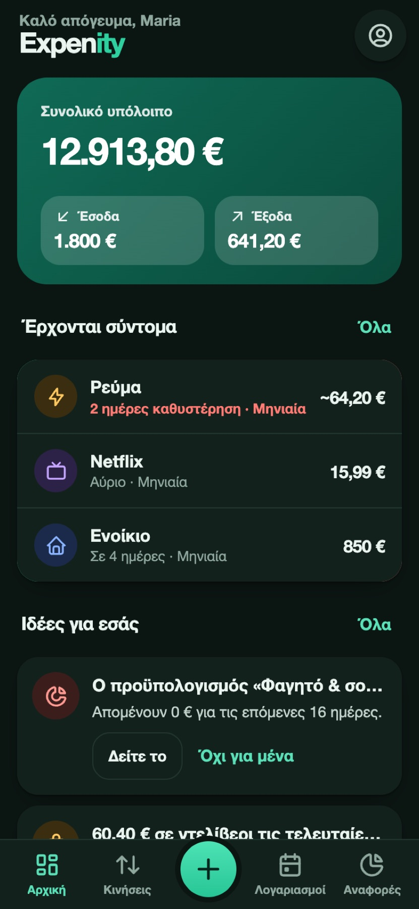
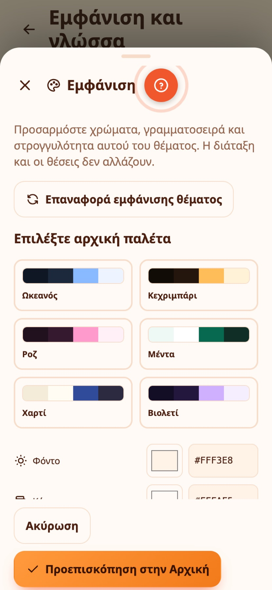
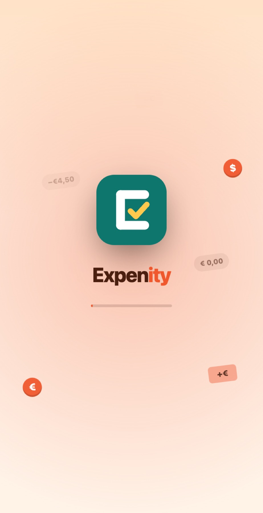
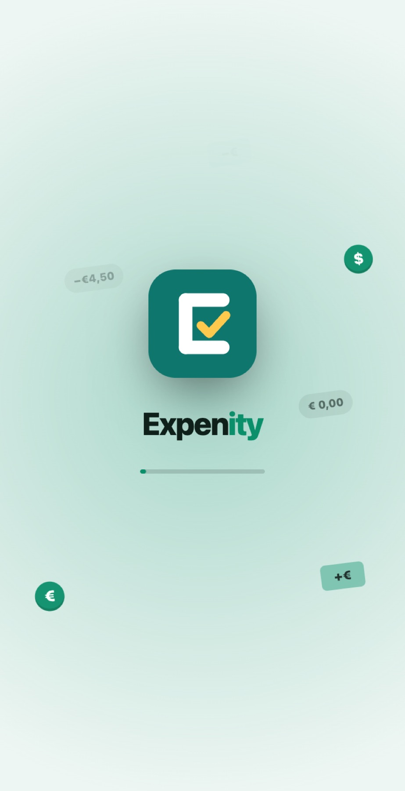
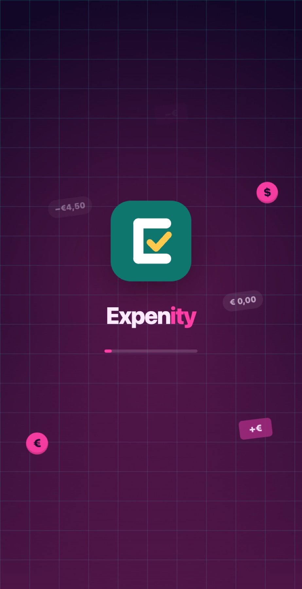
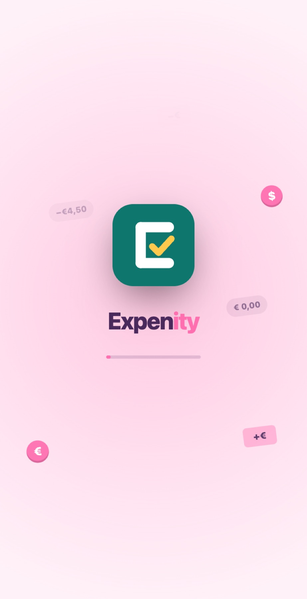

Θέματα και κινούμενα εφέ
Το Expenity έχει δεκαοχτώ θέματα και κάθε ένα έχει ένα μολύβι για να προσαρμόσετε χρώματα, γραμματοσειρά και στρογγυλότητα. Ένα θέμα αλλάζει περισσότερα από το χρώμα: σχήματα, γραμματοσειρές, περιγράμματα και μικρές λεπτομέρειες. Διαλέξτε ένα στο Περισσότερα → Εμφάνιση και γλώσσα, ή κατά τη ρύθμιση.

| Θέμα | Εμφάνιση |
|---|---|
| Σμαράγδι | Το προεπιλεγμένο: φρέσκο πράσινο, απαλές κάρτες |
| Μινιμαλιστικό | Μαύρο, λευκό και λεπτές γραμμές |
| Σημειώσεις σε χαρτί | Γραμμωτό χαρτί, χειρόγραφα γράμματα, αυτοκόλλητο για το υπόλοιπό σας |
| Καθολικό | Λογιστικό βιβλίο, γραμματοσειρά με πατούρες, διπλές γραμμές |
| Ρετρό τερματικό | Πράσινα γράμματα σε μαύρο, γραμματοσειρά τερματικού, γραμμές σάρωσης |
| Synthwave | Νέον ροζ και κυανό με ορίζοντα από πλέγμα |
| Σχέδιο μηχανικού | Λευκές γραμμές σε μπλε χαρτί σχεδίασης |
| Γλυκό παστέλ | Απαλό, στρογγυλό και παιχνιδιάρικο |
| Μεσάνυχτα | Πραγματικό μαύρο για οθόνες OLED |
| Γυαλί | Θολωτές κάρτες σε απαλή διαβάθμιση |
| Ηλιοβασίλεμα | Ζεστά πορτοκαλιά και κοραλλί |
| Πίνακας κιμωλίας | Κιμωλία σε σκούρο πράσινο πίνακα |
Το Σμαράγδι και το Μινιμαλιστικό έχουν επίσης φωτεινή και σκούρα εκδοχή. Διαλέξτε Όπως η συσκευή, Φωτεινό ή Σκούρο κάτω από τις κάρτες των θεμάτων. Τα υπόλοιπα θέματα κρατούν τη δική τους εμφάνιση.

Κινούμενα εφέ#
Το Expenity κινείται λίγο. Η κάρτα υπολοίπου στην Αρχική γυρίζει όταν την πατάτε και δείχνει συνοπτικά τον μήνα. Οι αριθμοί ανεβαίνουν, οι γραμμές και τα πορτοφόλια εμφανίζονται το ένα μετά το άλλο, οι μπάρες, οι κύκλοι και οι φέτες σχεδιάζονται μόνες τους, μια γραμμή που διαγράφετε σβήνει σταδιακά, η καρτέλα που πατάτε αναπηδά και όταν πετύχετε έναν στόχο πέφτει κομφετί. Στα Κινούμενα εφέ μπορείτε να επιλέξετε:
- Όπως η συσκευή: ακολουθεί τη ρύθμιση «μείωση κίνησης» της συσκευής σας.
- Πλήρη: όλα τα εφέ.
- Μειωμένα: πολύ σύντομη εκδοχή του καθενός.
- Κλειστά: καθόλου εφέ.
Ορισμένα θέματα έχουν επίσης μια διακριτική κίνηση πίσω από το περιεχόμενο: σπίθες που ανεβαίνουν στο Sunset, φύλλα που παρασύρονται στο Emerald, φυσαλίδες και κομφετί στο Pastel candy και ψηφία που πέφτουν στο Terminal. Δεν εμποδίζει ποτέ ένα πάτημα και σταματά όταν επιλέξετε Μειωμένα ή Κλειστά.
Το θέμα, το φωτεινό ή σκούρο και τα κινούμενα εφέ θυμούνται ξεχωριστά σε κάθε συσκευή. Το ίδιο και η γλώσσα: αλλάξτε την όποτε θέλετε στο Περισσότερα → Εμφάνιση και γλώσσα ή από την οθόνη υποδοχής.

Παράδειγμα από την καθημερινότητα
Ο Πέτρος προτιμά την ηρεμία, γι' αυτό απενεργοποιεί τα κινούμενα εφέ στην Εμφάνιση και η εφαρμογή μένει ακίνητη.
Amberwave, Ion και η δική σας παλέτα#
Το Amberwave συνδυάζει κεχριμπαρένιο νέον με ζεστές σκιές. Το Ion χρησιμοποιεί ηλεκτρικό κυανό σε βαθύ μπλε. Μαζί με το Synthwave έχουν αραιές φωτεινές κουκκίδες με λεπτές γραμμές. Το εφέ σταματά όταν η εφαρμογή κρύβεται και ακολουθεί τις ρυθμίσεις μειωμένης ή κλειστής κίνησης.
Επιλέξτε Το θέμα σας → Δημιουργήστε το θέμα σας για χρώματα φόντου, καρτών, έμφασης και κειμένου, γωνίες και γραμματοσειρά. Το κείμενο πρέπει να έχει επαρκή αντίθεση και στα δύο φόντα. Οι φωτεινές γραμμές είναι προαιρετικές. Το δικό σας θέμα αποθηκεύεται ανά συσκευή.
Η κίνηση του υπολοίπου ξεκινά στο άνοιγμα και στην αλλαγή οθόνης, μένει μεταξύ μηδενός και πραγματικού ποσού και καταλήγει στην ακριβή τιμή.
Προσαρμόστε οποιοδήποτε θέμα με το μολύβι#
Κάθε κάρτα θέματος έχει ένα μικρό μολύβι. Πατήστε το για να αλλάξετε τα χρώματα, τη γραμματοσειρά και τη στρογγυλότητα του θέματος. Η διάταξη και οι θέσεις δεν αλλάζουν ποτέ, μόνο η εμφάνιση, και οι αλλαγές αποθηκεύονται αμέσως για εκείνο το θέμα. Το παλιό ξεχωριστό προσαρμοσμένο θέμα αντικαταστάθηκε από αυτό.

Παράδειγμα από την καθημερινότητα
Η Άννα κρατά το θέμα Emerald αλλά με το μολύβι κάνει τις γωνίες πιο στρογγυλές και το χρώμα έμφασης μωβ.
Προεπισκόπηση θέματος στην Αρχική#
Στον επεξεργαστή θέματος, η Προεπισκόπηση στην Αρχική δείχνει τις αλλαγές σας στην πραγματική Αρχική οθόνη. Ένα πλαίσιο με Εφαρμογή και Συνέχεια επεξεργασίας μένει πάνω από τη γραμμή καρτελών. Η Εφαρμογή αποθηκεύει την εμφάνιση· η Συνέχεια επεξεργασίας σας γυρίζει στον επεξεργαστή με τις αλλαγές σας. Αν φύγετε χωρίς εφαρμογή, επιστρέφει το προηγούμενο θέμα σας.
Παράδειγμα από την καθημερινότητα
Πριν αποθηκεύσει, η Ελένη βλέπει τα νέα χρώματά της στην πραγματική Αρχική οθόνη για να βεβαιωθεί ότι η κάρτα υπολοίπου διαβάζεται εύκολα.
Αναφορές και μεγέθη στην Αρχική#
Η κάρτα Πού πήγαν τα χρήματα δείχνει τις δαπάνες του μήνα ανά κατηγορία, στο τέλος της Αρχικής. Από Περισσότερα → Προσαρμογή εφαρμογής → Προσαρμογή Αρχικής μπορείτε να προσθέσετε Τάσεις και Συνδρομές με το κουμπί Κάρτες. Κάθε κάρτα μπορεί να είναι Μικρή, Μεσαία ή Πλήρης· προσφέρονται μόνο τα μεγέθη που φαίνονται διαφορετικά. Πατήστε μια αναφορά για να ανοίξουν οι Αναφορές.
Παράδειγμα από την καθημερινότητα
Ο Νίκος κάνει την κάρτα Πού πήγαν τα χρήματα πλήρους πλάτους και το ημερήσιο ποσό μικρό πλακίδιο, ώστε η κορυφή της Αρχικής να δείχνει όσα ελέγχει περισσότερο.
Μια οθόνη εκκίνησης ντυμένη με το θέμα σας#
Όταν ανοίγετε την εφαρμογή, η οθόνη εκκίνησης παίρνει τα χρώματα του θέματός σας. Αν η φόρτωση αργήσει λίγο, ένα παιχνιδιάρικο μήνυμα σας κάνει παρέα. Εμφανίζεται μόνο όταν ανοίγετε την εφαρμογή, όχι όταν ανανεώνετε τη σελίδα.




Παράδειγμα από την καθημερινότητα
Η Ελένη αλλάζει θέμα για πλάκα. Το επόμενο πρωί, ανοίγοντας την εφαρμογή, την υποδέχονται τα δικά της χρώματα πριν εμφανιστούν τα νούμερα της ημέρας.
Γραμματοσειρές#
Οι γραμματοσειρές συνοδεύουν την εφαρμογή, ώστε να φαίνεται ίδια σε κάθε κινητό, tablet και υπολογιστή, με πλήρη υποστήριξη ελληνικών.
Η εικόνα σας και οι ήχοι#
Διαλέξτε έναν χαρακτήρα ή τη δική σας φωτογραφία ως εικόνα σας: δείτε Αποδείξεις, φωτογραφίες και η εικόνα σας. Προαιρετικά ηχητικά εφέ ενεργοποιούνται στο Περισσότερα → Κάν’ το δικό σας → Ήχοι (μέρος του πακέτου Advanced).
Δοκιμάστε τα θέματα ζωντανά#
Ο ιστότοπος του Expenity έχει την πραγματική εφαρμογή σε πλαίσιο iPhone, iPad και υπολογιστή, ώστε να αλλάζετε θέματα και να τα βλέπετε σε δράση πριν ανοίξετε την εφαρμογή.
Χρειάζεστε ακόμα βοήθεια; Δείτε τις FAQ, ή ρωτήστε στο GitHub.